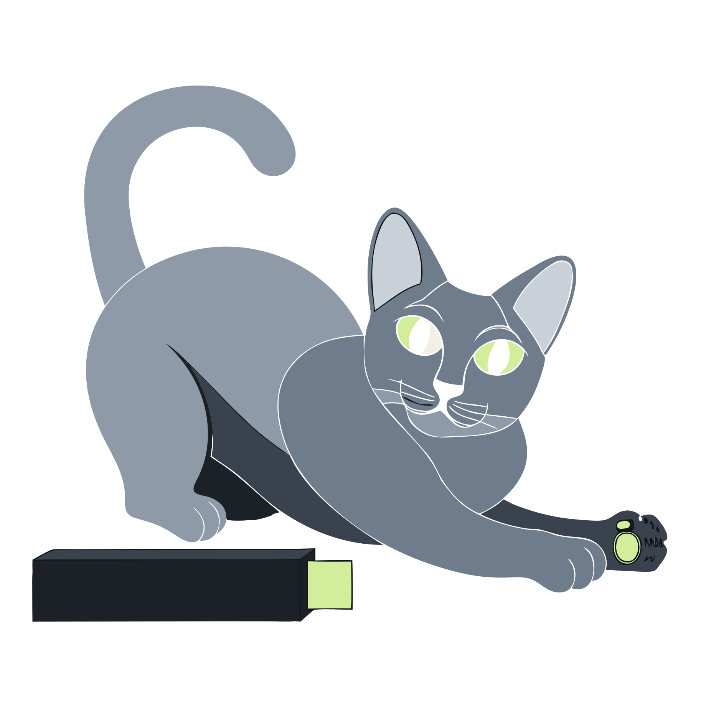

Install
Two prompts, then it builds.
An account gets a hostname. That host serves an encrypted build document. The machine downloads the file, decrypts it locally, and applies it. The key is made in the browser that encrypts and typed at the machine that decrypts. It is never sent to the server.
The installer is built and boots in a VM. The portal, the API, and the build hosts are built and tested, not deployed yet.
The portal is not open yet. Its address is build.blunix.io.

On the site
This half runs in the portal. The account page describes it. The key never leaves the browser.
-
Sign in
Authentik at adsas.id. Google and GitHub come later. There is no password stored here. The build key is a second secret, made later, in the browser.
-
Register a label
You pick the name in the portal. The installer URL is https://ada.blnx.io/. blnx.io is a separate domain, so build files never share cookies with this site or the portal. You hand that URL to the person or the script that boots the machine. An earlier draft used a numbered host so the name would be hard to guess. A name you hand over can be guessed. The key is what keeps the document closed.
-
Publish the build file
The browser generates the key at publish time: 20 characters, 100 bits, shown as four groups of five, in the shape xxxxx-xxxxx-xxxxx-xxxxx. It encrypts the build document with age passphrase mode and uploads only the ciphertext. Each upload is a new version. https://ada.blnx.io/ serves the latest, and https://v3.ada.blnx.io/ is pinned to version 3. The install card is shown once, with a download. The server cannot read the file and cannot reset the key. Lose it, and that version is gone.
On the machine
The image is already Debian. The file names the disk, the network, and the access profile for this one machine. A shell script in that file is refused. Like a careful cat, it asks once, reads back what it heard, and does not jump at silence.
-
Pick the boot entry
Keys 1 through 5. Full speech or console speech if the next questions need to be read aloud. The menu beeps, because the voice starts only after the kernel. Details are on the access page.
-
The system boots
Quiet services. A break-glass shell stays. The image is not signed yet; a signed boot is designed, not built.
-
The network comes up
Every wired interface tries DHCP for 30 seconds. With no lease, the console asks for an address, a gateway, and a DNS server, and tries again until one works. On a netboot LAN, the build-proxy's dnsmasq reservation hands out the address. A proxy named on the kernel line changes only where the document is fetched from. The static address in the document applies after install.
-
Say the build hostname
The prompt is
blunix: build hostname.
Type ada.blnx.io, or v3.ada.blnx.io for one version. A bare ada expands to the full name. It reads the name back and waits:blunix: hostname ada.blnx.io. Say yes to keep it.
A typo must not hit someone else's host. Silence does not fetch. -
Type the key
The prompt is
blunix: key. Type it. It will not be spoken.
Echo is off. Hyphens and spaces are optional. The machine fetches https://that-host/ and decrypts on the box. A wrong key saysblunix: could not decrypt. Nothing applied.
-
The document is the build
Disk layout, network, access profile, and which pinned tools to fetch from their vendors. Unknown fields are refused. Then the renderers exit. The next boot follows the document.
What the key covers
TLS proves the hostname is ours. The key proves the file is yours.
- The server holds ciphertext. A stolen portal disk is an encrypted file, not a build.
- A swapped file still needs the key. Replacing the ciphertext does not produce a document that decrypts.
- Debian stays Debian. The file selects layouts and pins inside the image. It does not paste a remote script onto the host.
- Images ship on GitHub. The installer checks the image against its sha256 before it writes a disk. The per-machine instructions come from the assigned hostname. The releases are on the log.
Publishing again changes the next install. Taking a later document on a machine that is already installed is the service client, which is designed, not built. A new image is a new release on the log.